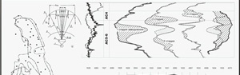

мы предоставляем спектр геофизических услуг:
когалымнефтегеоФизика
Все виды геофизических исследований
Телефон: (34667) 4-45-39
-
Вертикальное сейсмическое профилирование
позволяет изучать геологическое строение и физические свойства околоскважинного пространства с использованием волн различных типов - продольных, поперечных, обменных, на основе анализа характеристик этих волн, скоростей
-
Геофизические исследования, применяемые в открытом стволе
предназначен для отбора пластовых проб и гидродинамического испытания пластов, вскрытых боковыми горизонтальными
-
Контроль технического состояния обсадных колонн
предназначен для отбора пластовых проб и гидродинамического испытания пластов, вскрытых боковыми горизонтальными
- Акустическое сканирование
- Контроль качества цементирования
- Определение мест негерметичностиэксплуатационной колонны и интервалов перетоков
- Прихватоопределитель
- Технология радиоактивного каротажа с использованием меченой жидкости по методике РКР
- Трубная профилеметрия
- Электромагнитная дефектоскопия и толщинометрия
- Электромагнитная локация муфт
-
Сопровождение бурения наклонно-направленных и горизонтальных скважин
предназначен для отбора пластовых проб и гидродинамического испытания пластов, вскрытых боковыми горизонтальными
-
Вызов притока
предназначен для отбора пластовых проб и гидродинамического испытания пластов, вскрытых боковыми горизонтальными
-
Геофизические исследования, применяемые при контроле за разработкой месторождений
предназначен для отбора пластовых проб и гидродинамического испытания пластов, вскрытых боковыми горизонтальными
-
Методы ГИС, выполняемые совместно с научно - производственными предприятиями
предназначен для отбора пластовых проб и гидродинамического испытания пластов, вскрытых боковыми горизонтальными
-
Электрический каротаж через обсадную колонну
предназначен для отбора пластовых проб и гидродинамического испытания пластов, вскрытых боковыми горизонтальными
-
Комплексный каротаж за один спуск-подъем
предназначен для отбора пластовых проб и гидродинамического испытания пластов, вскрытых боковыми горизонтальными
-
Газовый каротаж и ГТИ
повышение геологической эффективности бурения и оптимизации процесса строительства скважины с точки зрения стоимости, безаварийности и обеспечения
-
Исследования скважин с горизонтальным окончанием
повышение геологической эффективности бурения и оптимизации процесса строительства скважины с точки зрения стоимости, безаварийности и обеспечения
-
Прострелочно-взрывные работы
повышение геологической эффективности бурения и оптимизации процесса строительства скважины с точки зрения стоимости, безаварийности и обеспечения
- Бескорпусные кумулятивные перфораторы
- Взрывные пакеры
- Геофизическое сопровождение вскрытия пластов перфорацией
- Гидромеханические щелевые перфораторы
- Контроль срабатывания прострелочно-взрывной аппаратуры
- Корпусные кумулятивные перфораторы многократного применения
- Корпусные кумулятивные перфораторы однократного применения
- Пороховые генераторы давления
- Сверлящая перфорация
- Фугасные торпеды и кольцевые труборезы
-
Испытание пластов
предназначен для отбора пластовых проб и гидродинамического испытания пластов, вскрытых боковыми горизонтальными